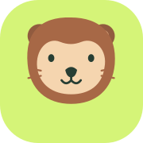
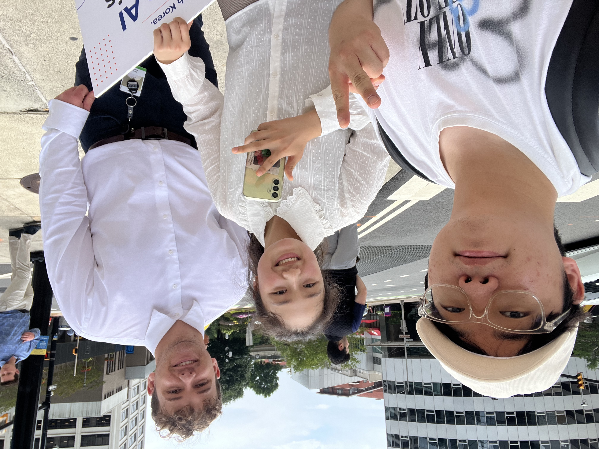
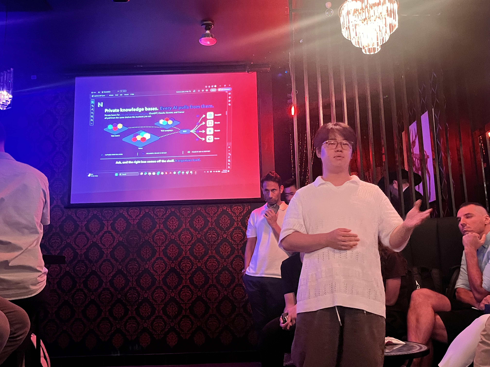
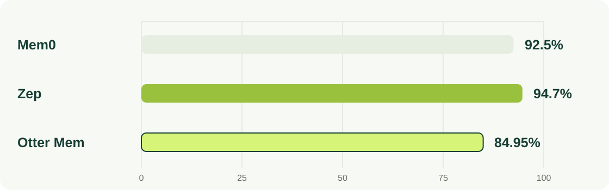
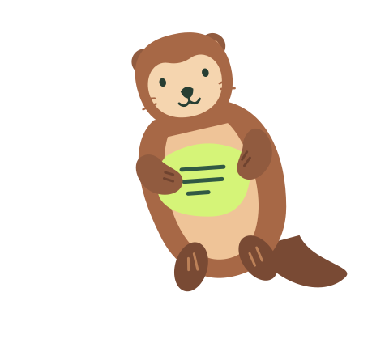

미국 현지 인터뷰
고객발견 · 직접 묻고 듣기

2026 여름 창업 회고
김정욱 Venturers 2026.09.07
2026 여름 · 방학 활동 모아보기


고객발견 · 직접 묻고 듣기
Startup Valley · 피치덱 발표
6일 보조강사
자체 평가 · 84.95%
Nevermind에서 이름 전환
1:1 멘토링 3회 완료 / 별도 심사 미선발
선정 후 활동 운영
모두의창업 1R 통과 · YC 지원 · 포스텍 BM 제출
오늘의 흐름
방학의 경험을 네 가지 질문으로 연결했습니다.
KPC 실무자 교육 · Problem first
GPT-6 Astra · LoCoMo · 사람이 읽는 기억
인간다운 삶 · 작은 시작 · 리브랜딩
텍스코어 자금 · 서울 100+ 인터뷰 · 파일럿 · 교육
함께 묻고 답하기 · Q&A
풀어야 할 문제는 어디서 발견되는가?
KPC 국제물류 실무자 AI 교육 · 6일 보조강사
20년 경력의 참여자도 있었다.
참여자 소속 예시 · 삼성물산, 판토스, 한진택배 등
Problem first
사람들이 원한다고 말해도, 지불의사는 낮을 수 있다.
AI가 만드는 시대, 무엇이 남는가?
GPT-6 Astra
AI가 잘 만들수록, 쉽게 따라 하기 어려운 강점을 찾아야 한다.
우리는 기억 기술을 검증했다 →
긴 대화 기억 평가 결과
공개된 기억 평가 점수
서로 다른 평가 조건

평가 조건이 달라 직접 순위 비교는 어렵습니다. 같은 조건에서 다시 확인할 예정입니다.
앞으로의 기술 과제
사람이 고친 내용이 AI의 기억에도 잘 반영되는지 확인한다.
우리의 경쟁력은 누구의 삶을 위해 존재하는가?
비전을 바꾼 것이 아니라
우리가 왜 만드는지 더 선명하게 했다.
AI는 이 삶을 위한 수단이다.
Why not change the world?
현재 제품과 장기 방향을 구분하고 연결한다.
창의, 결정, 배움, 사랑과 돌봄에 집중한다.
사람이 확인하고 수정할 수 있게 한다.
마지막 유효한 결정부터 다시 시작한다.
사용자가 맡긴 범위에서 먼저 돕는다.
미국 인터뷰에서 이어진 리브랜딩
Nevermind
인간을 위한 비전을 친근한 이름과 경험으로 전한다.
비전공자를 포함한 더 많은 사람이 이해하고 기억할 수 있게
이 비전을 시장에서 어떤 순서로 검증할 것인가?
텍스코어 자금 활용 계획 · 서울
텍스코어 자금으로 서울에서 고객을 만나고, 문제와 지불의사를 확인한 뒤 실제 사용과 결제로 검증한다.
콜드메일 등으로 고객 만나기
100명+ 추가 인터뷰 · 서베이 · 지불의사
실제 업무 파일럿
결제로 확인
충성고객
단계별 이탈 이유를 배우고
문제 검증으로 돌아간다.
텍스코어 자금 활용 계획 · 교육
교육에 집행할 예정액
텍스코어 자금으로 계획 · 필요하면 추가
Venturers에 남기고 싶은 말
저부터 이 질문을 받고 싶습니다.
제가 놓친 문제부터 찔러주세요.
이 문제는 돈을 내고 해결할 만큼 아픈가?
AI가 비슷한 제품을 만들면 무엇이 남는가?
다음에는 어떤 가설을 확인해 올 것인가?
Q&A · 3분
기술, 브랜드, 다음 실험
Goodbye
함께 나눈 고민을 다음 실험으로 이어가겠습니다.
